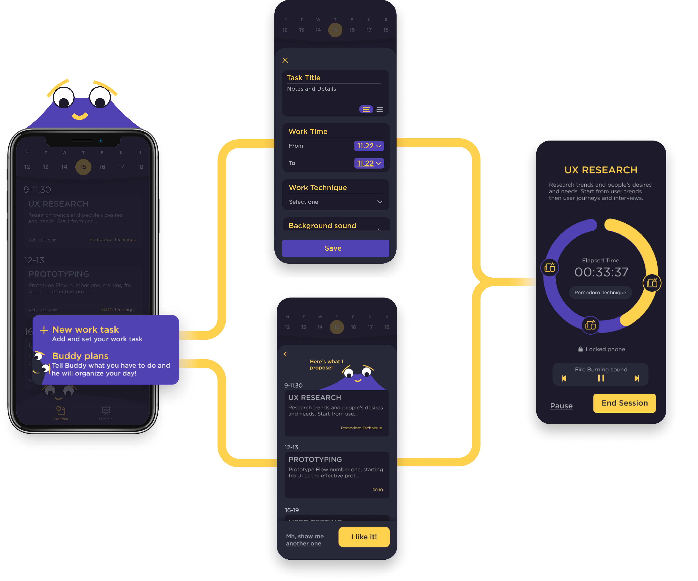

Brief
Develop a startup that is based on the design of a
product / system / service
The starting point for a successful business idea is the
ability to interpret the society we live for identify and respond to people's present and future needs.
3 Macroscenaries divided into micro themes
Wellness / Wellbeing
Sustainability
Humanology
Scenario
Virtual Reality
It is an entirely digital world in which the user is entirely immersed thanks to the use of a virtual reality viewer.
Metaverse
It is a virtual reality shared via the internet by users, allowing you to recreate the same dynamics that occur on the web in a completely new and revolutionary way.
Motion Sickness
Free body movement
Implement the user's body free and natural movements, In fact, being brain processing and movement perfectly coordinated , the user won’t fell motion sick at all.
Workers said
San Workers

Seeking Help
Users trying to improve their performances and productivity are making some online videos a real thing, making them skyrocket building then a trend, these video are the Study with me.
As we can see, they are often expedients to be able to avoid getting distracted and to have Time tracking
Persona
Thanks to the interviews conducted to the parents as well, we've been able to build our user persona.
Cystomer Journey
After we understood our persona, we then made a Cutomer journey, of which here are the most important steps.
Information Architecture
I wanted to create an easy, realex and anti stress environment, so I mapped the Information Architecture in order to make informations easy to find and reach, without any effort from the user.
Wireframes
Understood the most important informations, then I went on trying to figure out how to make buddy a real work companion, one to interact with and to feel appreciated from, so I explored the interaction with the user wireframing the app and testing it.
UI Elements
The aim of the app was to create a relaxing and non-stressfull environment, so the elements have been designed following that direction.
Work management
made by you or buddy.
Both the tasks take to the focus workroom, a digital enviroment built in order to don’t let the user get distracted
Focus workrooms, just you and your work companion.
Once you start working, you get access and enter into the Focus Workrooms, with Buddy, your personal work assistant, in addition to being a companion, it will strive to create a pleasant, relaxing and creative environment.
Tell buddy, he proposes, you decide.
Tell buddy general info about your todos and let him figure out one kind of plan, he’ll propose you, but the final decision will always be yours, if you don’t like he will go one proposing you until you find the one that fits for you!

Multiplatform product, in order to build a relaxed and focusing environment
The platoform could be exploitable on any device, in order to create the most immersive enviroment possible, and have all the tech devices helping you focusing on your tasks